Code
# Données
library(dplyr) # manipulation des données
# Plots
## ggplot
library(ggplot2)
library(gridExtra)# Données
library(dplyr) # manipulation des données
# Plots
## ggplot
library(ggplot2)
library(gridExtra)METTRE LES REMARQUES
METTRE LES POINTS D’ATTENTION
Résultats
METTRE LES CONCLUSIONS
sessioninfo::session_info(pkgs = "attached")─ Session info ───────────────────────────────────────────────────────────────
setting value
version R version 4.2.1 (2022-06-23 ucrt)
os Windows 10 x64 (build 22631)
system x86_64, mingw32
ui RTerm
language (EN)
collate French_France.utf8
ctype French_France.utf8
tz Europe/Paris
date 2025-02-27
pandoc 3.2 @ C:/Program Files/RStudio/resources/app/bin/quarto/bin/tools/ (via rmarkdown)
─ Packages ───────────────────────────────────────────────────────────────────
package * version date (UTC) lib source
dplyr * 1.1.4 2023-11-17 [1] CRAN (R 4.2.3)
ggplot2 * 3.5.1 2024-04-23 [1] CRAN (R 4.2.3)
gridExtra * 2.3 2017-09-09 [1] CRAN (R 4.2.1)
[1] C:/Users/cleme/AppData/Local/R/win-library/4.2
[2] C:/Program Files/R/R-4.2.1/library
──────────────────────────────────────────────────────────────────────────────Tendance et saisonnalité : étude de la série de vente de voitures. http://www.math.sciences.univ-nantes.fr/~philippe/lecture/voiture.txt
On conserve uniquement le début de la série avant la rupture.
url_TP3 = "http://www.math.sciences.univ-nantes.fr/~philippe/lecture/voiture.txt"
X = scan(url_TP3) # pour importer le dataframe en 1 vecteur de donnée (et non un dataframe de dim n*m)
Xt = ts(X, frequency =12)
# On fixe une fréquence de 12 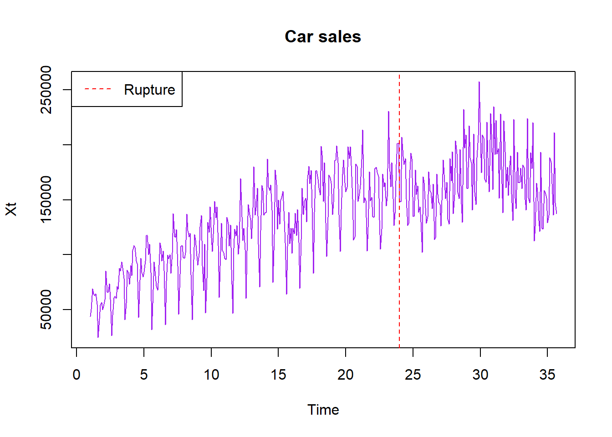
On constate une rupture au niveau du temps 24. On ne conserve donc que la première partie pour notre analyse.
Xt = window(Xt, start=start(Xt), end=24)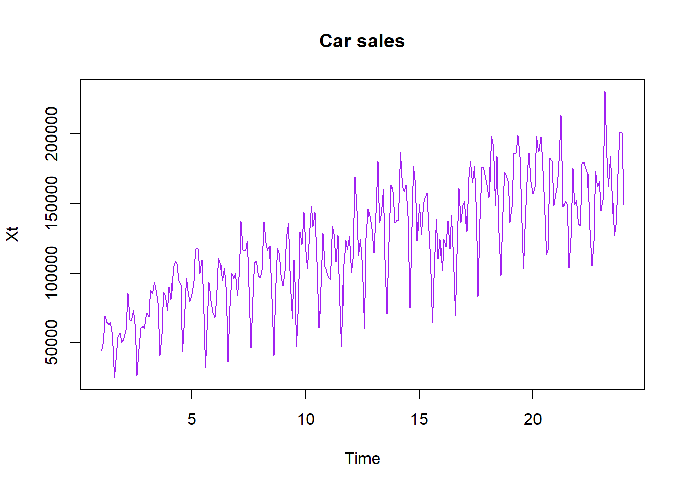
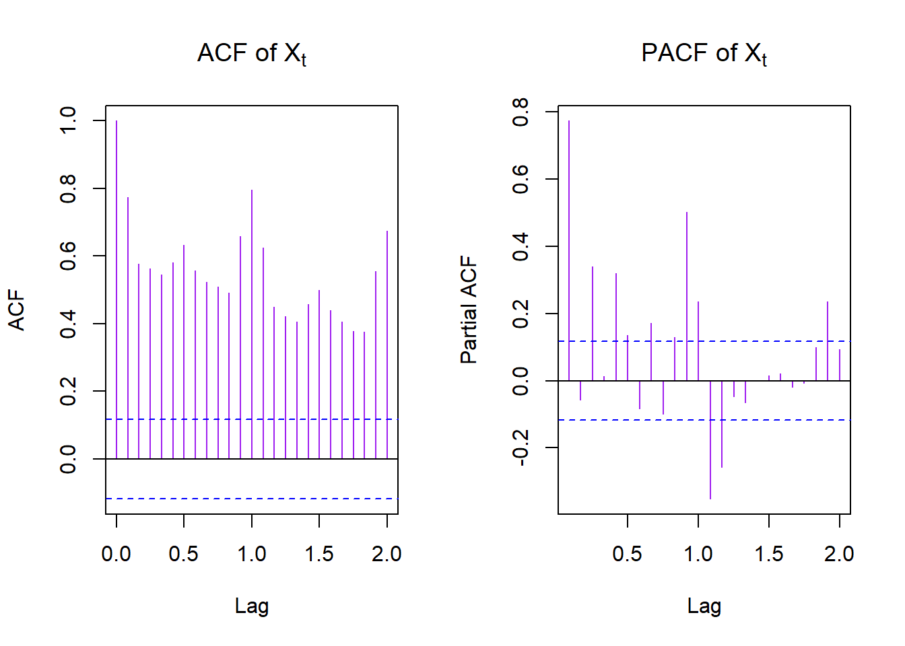
On constate effectivement une tendance globale sur toute la série au vu de nos deux graphes. De plus, l’ACF nous permet de voir une composante saisonnière qui serait probablement de période 12.
Pour cette partie, on peut se référé au cours de Séries Temporelle (slides 37-51).
#### ETAPE 1 : LISSAGE/FILTRAGE ####
# on suppose période 12 d'après l'acf
d = 12
# si période d pair, filtre :
a = c(1/2,rep(1,d-1),1/2)/d
m = stats::filter(Xt, a, sides = 2)
Z = Xt - m
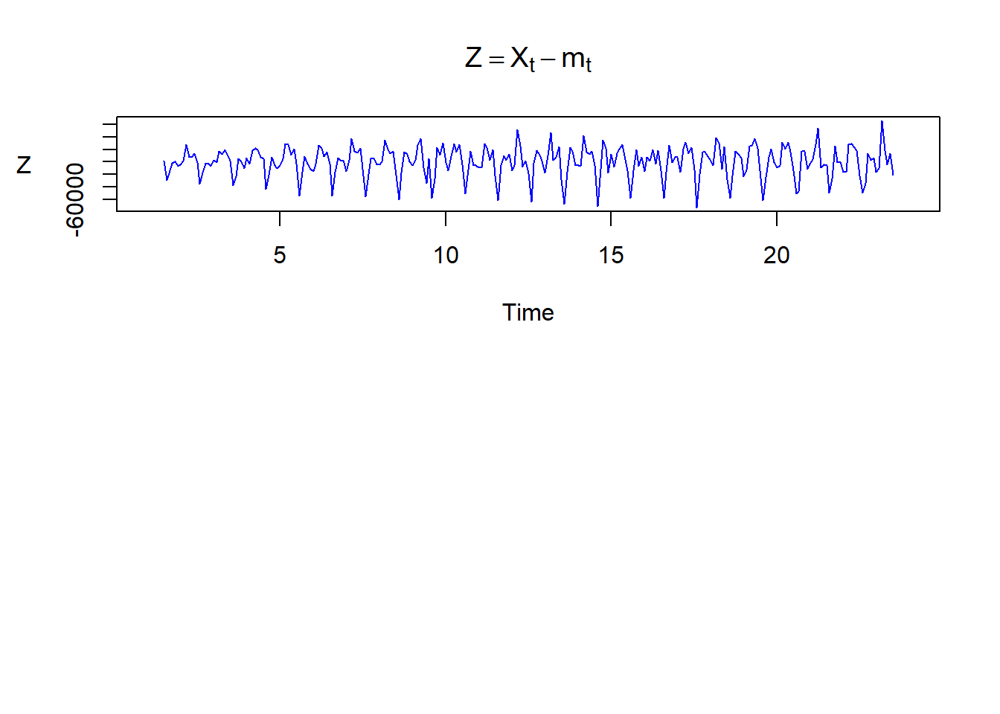
Le lissage d’une série chronologique (ou le filtrage) est utilisé pour découvrir certaines caractéristiques d’une série temporelle, telles que la tendance et les composantes saisonnières.
#### ETAPE 2 : ELIMINATION SAISONNALITE ET TENDANCE ####
# Saisonnalité
Z = ts(Z, frequency = d) # impose la fréquence/période
s.est = 1:12
for ( i in 1:12 ){
s.est[i]= mean(Z[cycle(Z) == i] , na.rm=TRUE)
}
S.est = ts(rep(s.est,d), frequency = frequency(Xt)) # Saisonnalité estimée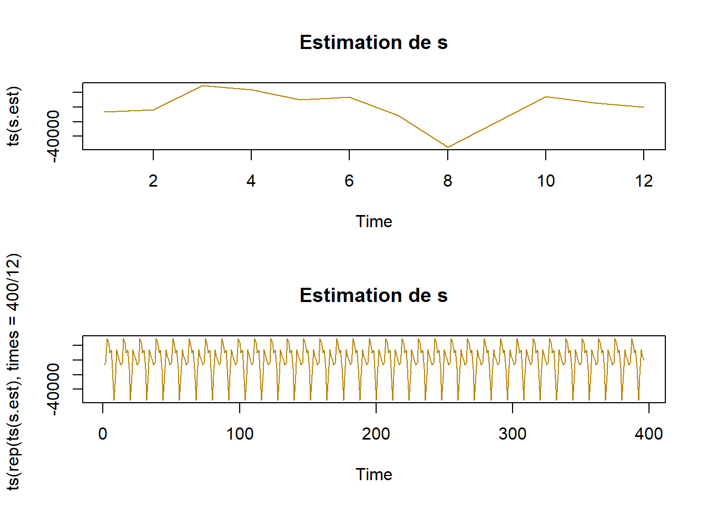
# Tendance
Q = Xt - s.est Warning in `-.default`(Xt, s.est): la taille d'un objet plus long n'est pas
multiple de la taille d'un objet plus courtmod = lm(Q ~ time(Q)) # time(Q) ca fait 1:lenght(Q)
summary(mod)
Call:
lm(formula = Q ~ time(Q))
Residuals:
Min 1Q Median 3Q Max
-51203 -10213 -318 9711 36567
Coefficients:
Estimate Std. Error t value Pr(>|t|)
(Intercept) 57964.5 1882.0 30.80 <2e-16 ***
time(Q) 4958.3 132.9 37.32 <2e-16 ***
---
Signif. codes: 0 '***' 0.001 '**' 0.01 '*' 0.05 '.' 0.1 ' ' 1
Residual standard error: 14730 on 275 degrees of freedom
Multiple R-squared: 0.8351, Adjusted R-squared: 0.8345
F-statistic: 1393 on 1 and 275 DF, p-value: < 2.2e-16P.est = ts(mod$fitted.values, frequency = frequency(Xt)) # Tendance estimée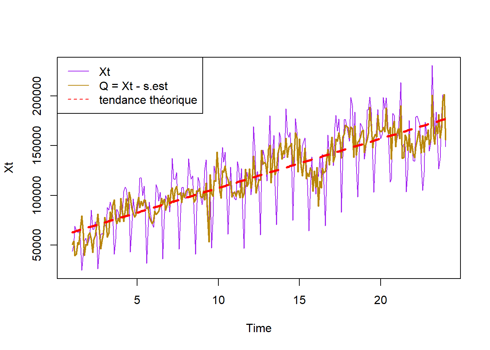
Rj = Xt - P.est - S.est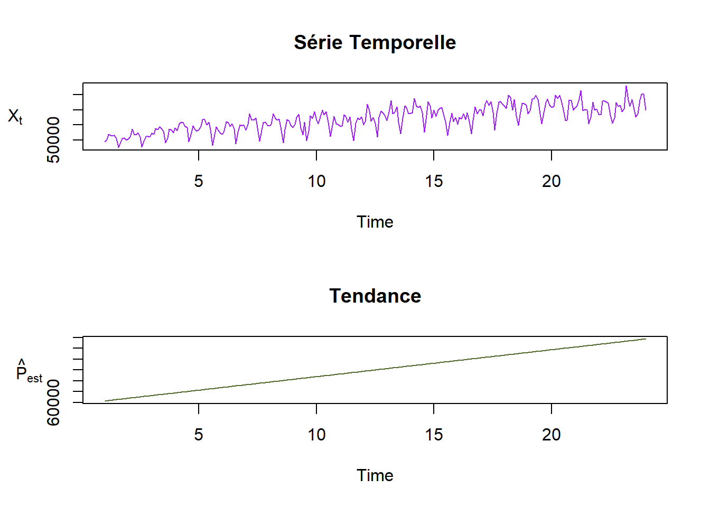
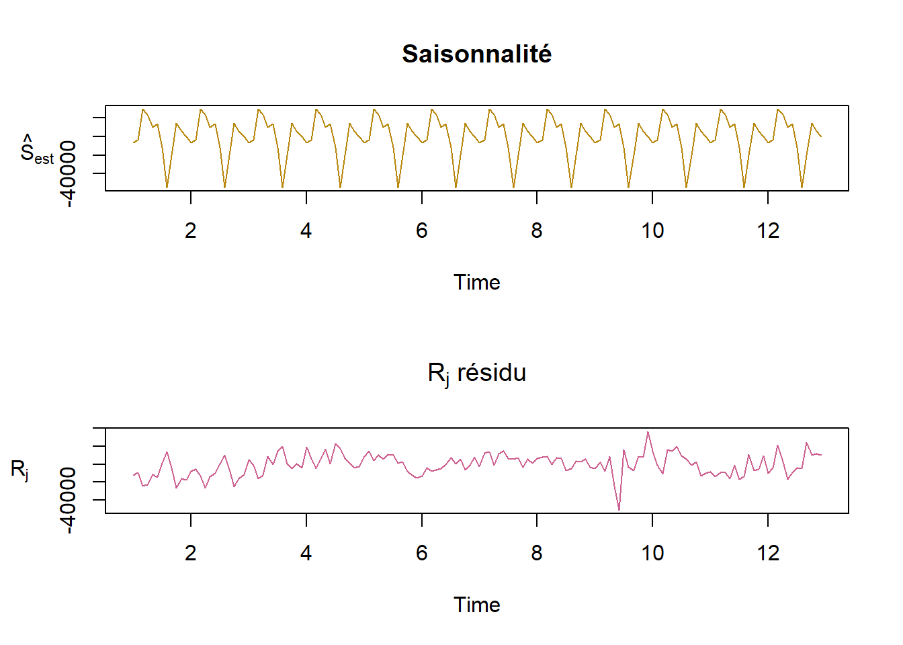
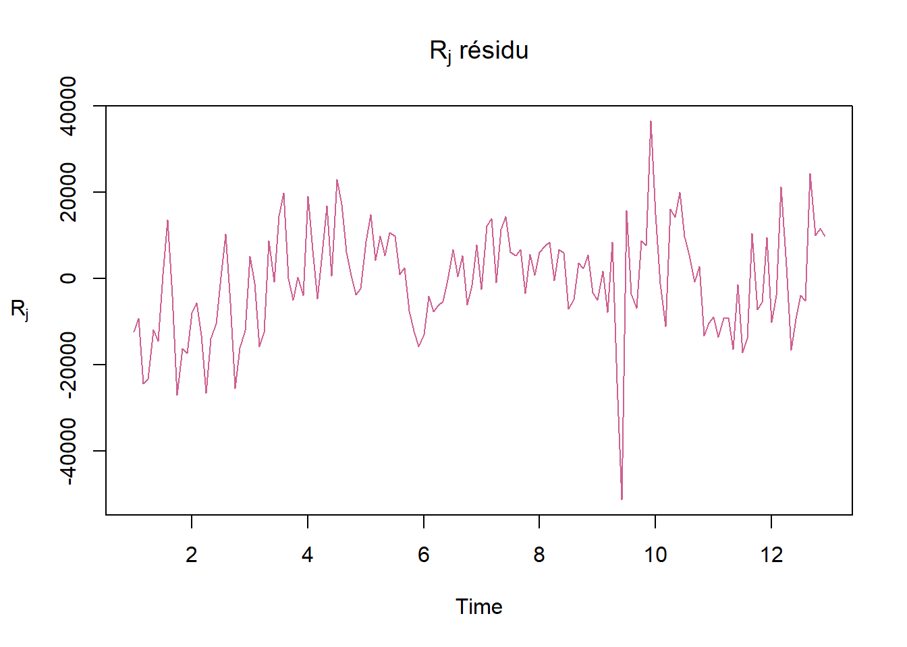
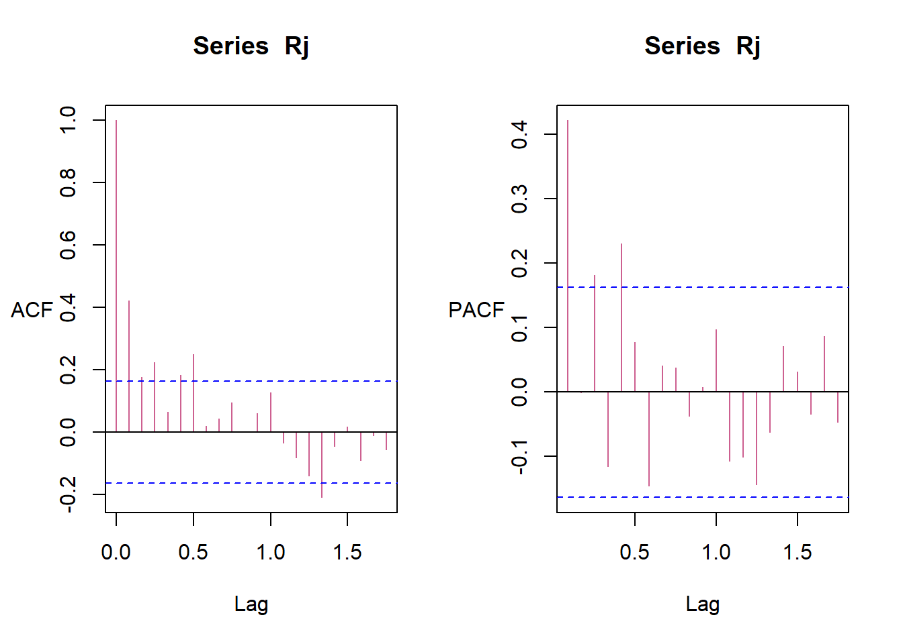
on a l’impression d’avoir un bruit u peu centré \((E(R_j)=0)\) mais pas dingue avec une variance pas super constante. Mais, avec l’acf, ont voit tout de meme une corrélation faible qui pourrait faire pensé à un BB.
CONCLUSION : ??
Normalité (Test shapiro)
shapiro.test(Rj)
Shapiro-Wilk normality test
data: Rj
W = 0.98218, p-value = 0.05807Vérification par le test de Shapiro-Wilk (normalité : p-value > 0,05) On garde l’hypothèse de la normalité
Corrélation
cor.test(1:length(Rj), Rj)
Pearson's product-moment correlation
data: 1:length(Rj) and Rj
t = 2.1745, df = 142, p-value = 0.03133
alternative hypothesis: true correlation is not equal to 0
95 percent confidence interval:
0.01641902 0.33330168
sample estimates:
cor
0.1795128 Les deux valeurs importantes de ce résultat sont la corrélation (50%) et sa p-value (1*10^-8%). Le test nous dit en outre qu’il y a 95% de chances que la “véritable corrélation” entre temps et valeur soit comprise dans “l’intervalle de confiance” entre 36% et 61%. Notez que 0% est un nombre non inclus dans cette fourchette: en d’autres mots, il se pourrait très bien que valeur et temps soient du tout corrélés. En bref, l’algorithme détecte une corrélation.
BB
Le test de la statisticienne finnoise Greta Ljung (et de son directeur de thèse George Box) examine l’autocorrélation d’une série temporelle. Son “hypothèse nulle” est d’avoir affaire à du “bruit blanc”.
Box.test(Rj, type="Ljung-Box")
Box-Ljung test
data: Rj
X-squared = 26.159, df = 1, p-value = 3.145e-07La p-value est faible (8e-09). Le test nous permet donc de rejeter l’hypothèse d’avoir affaire à du bruit blanc
Etant donné que l’on a détecter une tendance et une saisonnalité de période 12, on peut tenter une différenciation de la série avec \(s=12\) et \(d=1\).
R1 = diff(Xt, lag=12)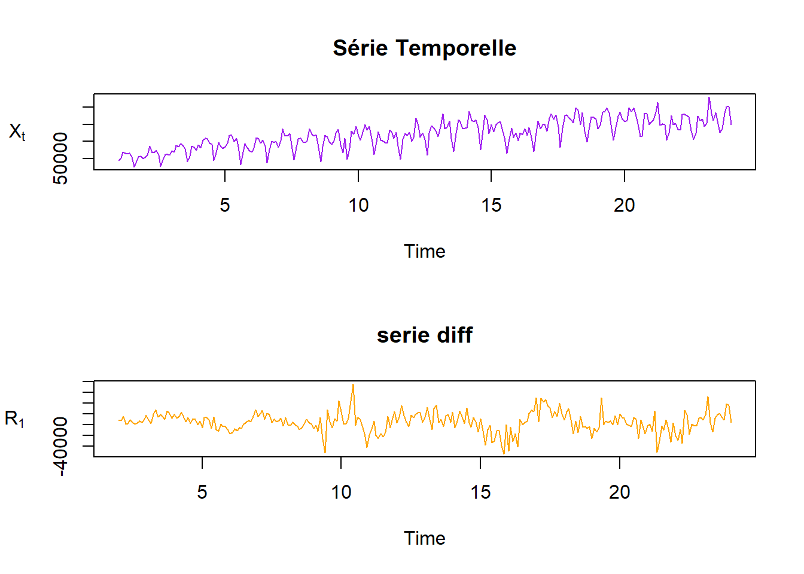
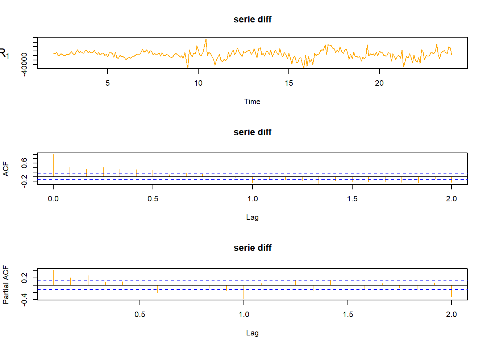
pour enlever le pb en 12, on se propose d’appliquer à nouveau la différence
R2 = diff(R1)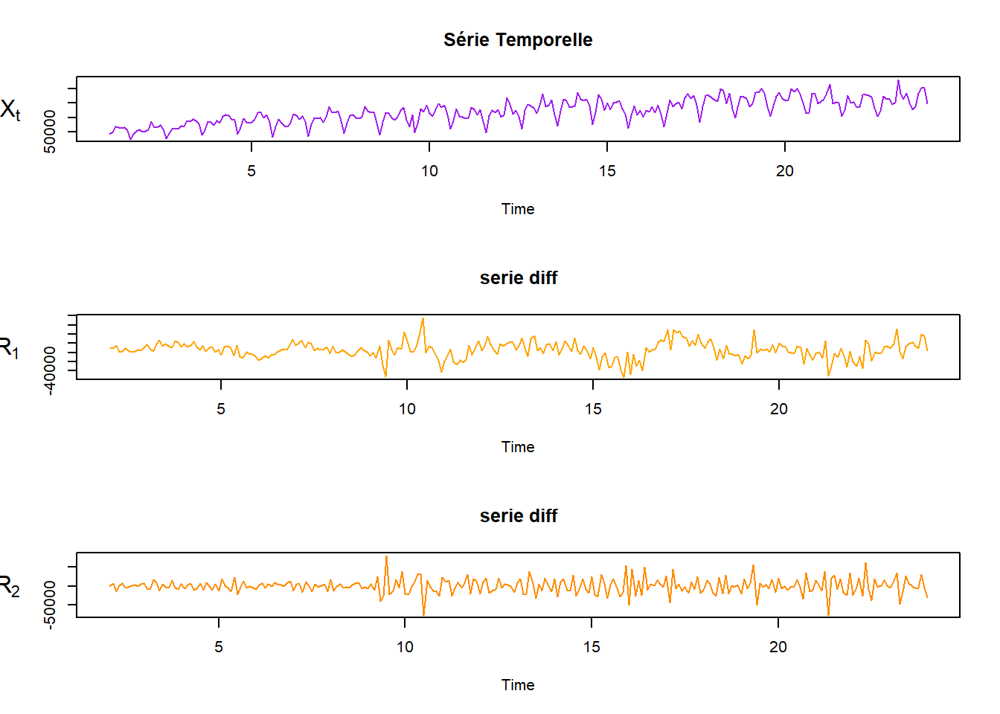
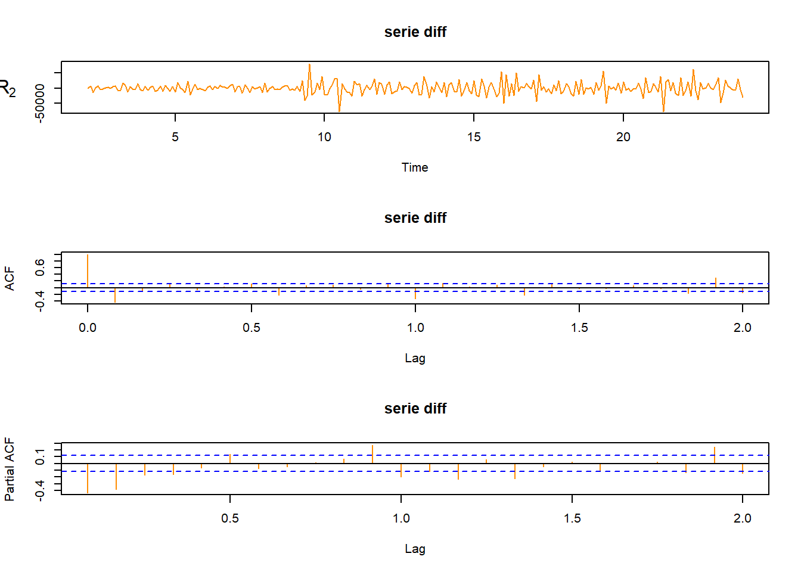